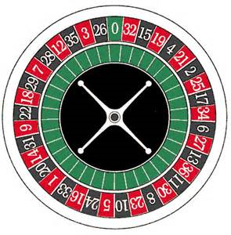
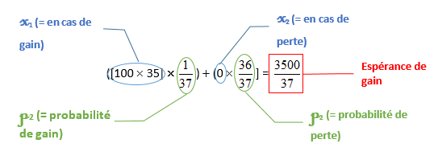
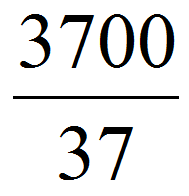
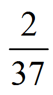
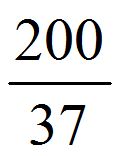
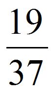
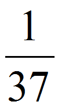
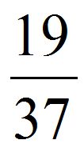
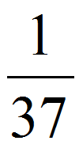
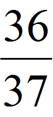

La roulette est un jeu de hasard dans lequel chaque joueur, assis autour d'une table de jeu, mise sur un ou plusieurs numéros, une couleur, la hauteur ou la parité du numéro qu'il espère être tiré. Le tirage du numéro s'effectue à l'aide d'une bille jetée dans un récipient circulaire tournant et muni d'encoches ayant des numéros de différentes couleurs. Il y a 37 numéros : 18 rouges, 18 noirs et un zéro. 
La première roulette aurait été conçue au XVIIème siècle en France, par le mathématicien Blaise Pascal (en fonction de la source on ne trouve pas le même inventeur, mais Blaise
Pascal était le nom le plus récurrent), qui était fasciné par les dispositifs à mouvement perpétuel.
Le jeu a été joué dans sa forme actuelle à partir de 1796 à Paris. Les joueurs parient sur l'endroit où la bille, entraînée aléatoirement par
le mouvement de la roue, aboutira. Les numéros rouges et noirs apparaissent à la fin du XVIIIème siècle. Alors que le jeu comportait jusque-là
trente-huit numéro (avec un zéro rouge et un double zéro noir), en 1842, les frères François et Louis Blanc améliorent le jeu en supprimant la
case double zéro pour ne garder que le zéro simple. Cette case semble augmenter l'avantage du joueur, ce qui vaut un succès instantané aux
frères Blanc.
C’est au début du XIXe siècle à Monte Carlo, que la roulette va devenir véritablement populaire. En effet, Charles III de Monaco légalise les
jeux d’argent dans sa principauté et demande aux deux frères d’ouvrir un casino en 1860. Le jeu de la roulette y est présent.
Après une période d’illégalité lors de la prohibition aux États-Unis (de 1919 à 1932), le Nevada l’autorise à nouveau et l’introduit dans les
casinos de Las Vegas. Depuis ce jour, la roulette est populaire dans le monde entier.
À ce jour, aucun dispositif ne permet de battre la roulette à chaque tour de jeu. Cependant, il existerait des techniques qui permettraient
de faire du bénéfice. Il faut pour cela que leur espérance de gain soit positive. L’espérance mathématique ou espérance de gain est une valeur
correspondant au montant que l’on peut espérer remporter sur le long terme, par exemple dans une partie de roulette.
Elle se calcule de la manière suivante, avec x = valeur du gain (négatif si c’est une perte) et p = probabilité du gain :
E(x)= x1p1 + x2p2 + … + xnpn
Par exemple, à la roulette, il y a 37 numéros (de 0 à 36). Si on mise sur un numéro et que la bille tombe sur le numéro choisi, on gagne 35
fois la mise. Sinon on perd la mise. Si on joue 100€, notre espérance de gain est:

Sachant que miser 100 équivaut à miser , on perd donc en moyenne
 de la mise, soit  €
On voit donc déjà que miser sur un seul numéro n’est pas une bonne technique au long terme (à moins d’être énormément chanceux).
Une autre technique consiste à miser toujours sur la même couleur (soit le rouge, soit le noir) et miser toujours le double du tour précédent. Un bloggeur (Nicolas Moro) a étudié le sujet de la roulette et cette technique en particulier. C’est cette martingale que nous allons tester.
Il faut savoir que lorsqu’un joueur gagne en ayant misé sur une couleur, il remporte deux fois sa mise. Si le joueur gagne, tant mieux, et s’il perd, au tour suivant il mise le double de ce qu’il avait misé auparavant. Par exemple, si le joueur a misé 1 euro sur les noirs, et que le rouge tombe, au tour suivant, il misera 2 euros toujours sur les noirs, s’il perd alors ce sera 4 euros sur les noirs… et ainsi de suite.
A priori, cette technique présente un avantage indéniable : vous finirez théoriquement toujours par récupérer ce que vous avez perdu aux tours précédents, et vous y gagnerez votre mise de départ en plus. Dans la situation précédente, si le joueur gagne après avoir misé 4 euros, il aura perdu 1+2+4=7 euros et récupéré 8 euros, il aura donc au final gagné 1 euro (c’est donc bien ce qu’il avait misé au départ).
Cependant il y a plusieurs inconvénients majeurs à cette technique :
- Il faudrait prévoir une somme d'argent colossale pour être sûr de faire du bénéfice. En effet, imaginons que nous misions 1€ au départ, si la mauvaise couleur tombe 5 fois de suite, la fois d'après il nous faudrait miser 32€. Cela parait assez peu, cependant si elle tombe sur la mauvaise couleur encore 5 fois de plus (ce qui est tout à fait possible), nous devrions miser 1024€, et ainsi de suite, tout ça pour au final faire seulement un euro de bénéfice. Si nous voulions gagner plus, mettons 100€ : pour une mauvaise couleur qui tombe dix fois de suite nous devrions miser 102 400€ la fois suivante ! Pas sûr que quelqu'un qui ait les moyens de miser une telle somme ait besoin de 100€...
- De plus, le zéro n’appartient à aucune des couleurs : on a donc plus de chance de perdre que de gagner. En effet, si nous misons sur les noirs : sur 37 numéros, il y en a 18 qui sont de la bonne couleur, et 18 rouges et un zéro donc 19 de la mauvaise couleur.
Nous avons donc  chances de gagner et  chances de perdre :
sur le très long terme, nous perdrions donc  de la mise de départ.
chances de gagner et  chances de perdre :
sur le très long terme, nous perdrions donc  de la mise de départ.
Pour vérifier ça mathématiquement, nous allons calculer l’espérance de gain de cette technique, avec n = mise de départ. Voici tout d’abord un tableau pour rendre les choses plus claires :
| Si on gagne | Si on perd | |
|---|---|---|
| xi= gains | x1 = 2n | x2= 0 |
| pi= probabilité du gain | p1= |
p2= |
On a donc :
E(x)= x1p1 + x2p2 + … + xnpn
=2n x + 0 x
=  n
Selon l’espérance de gain, nous perdons effectivement de notre mise initiale sur le très long terme (cela serait en fait vrai si cette technique était effectuée une infinité de fois, cependant plus on fait de tentatives plus notre gain final se rapprochera de de la mise initiale).
Nous voyons donc que cette technique peut marcher si on est chanceux, cependant en l’employant nous avons moins de chance de gagner que de perdre, et on arrive rapidement à miser de grosses sommes pour un très petit bénéfice. Cette martingale n’est donc pas efficace pour gagner, nous recommandons ne pas l’utiliser (et même de ne pas jouer aux jeux de hasard et d’argent en général).